Software Systems Engineering is the branch of Engineering which is concerned with the development of Software Systems and their life-cycles. A Software System can be comprised of Software (e.g. programs, code), Hardware (e.g. computers, smart phones), and development artifacts (e.g. diagrams, documentation). While most students primarily focus on developing software, you will get exposure to math, natural sciences, computer science, and electronics. Essentially you will learn to solve engineering problems by developing software as the primary component (but not only component) of the solution. Example areas of study include networks, artificial intelligence and machine learning, embedded systems, desktop and web applications, and game development. Software Development Life-cycles include the requirements, planning, design, development, testing, deployment, maintenance and decommissioning of these systems.
What is Engineering - Software Systems Engineering - Exercise
University of Regina - Engineering and Applied Science - Software Systems Engineering
Lab Instructor: Adam Tilson
In this exercise, we will simulate embedded systems using TinkerCad. Please join the classroom here:
https://www.tinkercad.com/joinclass/FITVZUZT8
And use the nickname pcx, where x is the station number of your machine. e.g. pc1.
After that go to classes -> what is engineering -> ardy

Then do a Copy and Tinker of the starting circuit.
We will work on this project in four phases. If you fall behind at any phase, you can always return to this screen, and instead Copy and Tinker the next checkpoint.
Arduino Microcontoller
Our project is going to be simulated using the Arduino Uno R3 microcontroller board. This is a popuar hobbyist board which allows building simple circuits and programming them using logic.
To begin, identify the two lines of pins on each side of the microcontroller. These are places where wires can be attached.
To begin let’s create a very simple circuit with the following
5V pin -> 330 Ohm resistor -> LED anode -> LED cathode -> GND (any ground pin will work fine.)
- You can add components to TinkerCad by dragging them from the right pane
- add a resistor
- add an LED

- You can modify some properties of devices by clicking on them, and then changing values in the popup
- use this to change the resistor value to 330 Ohms
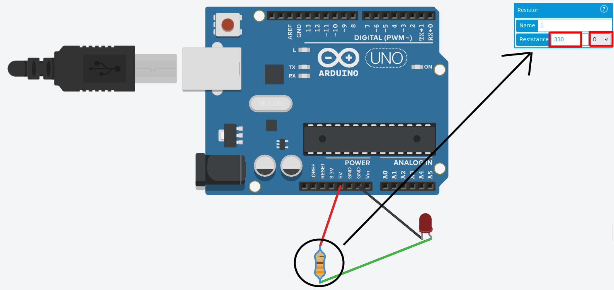
- You can add wires to your circuit by dragging from pin ports to terminals on devices
- You can change the colors of wires in the upper left, by convention it is a good idea to use black wires for ground wires, and red wires for the higher voltages
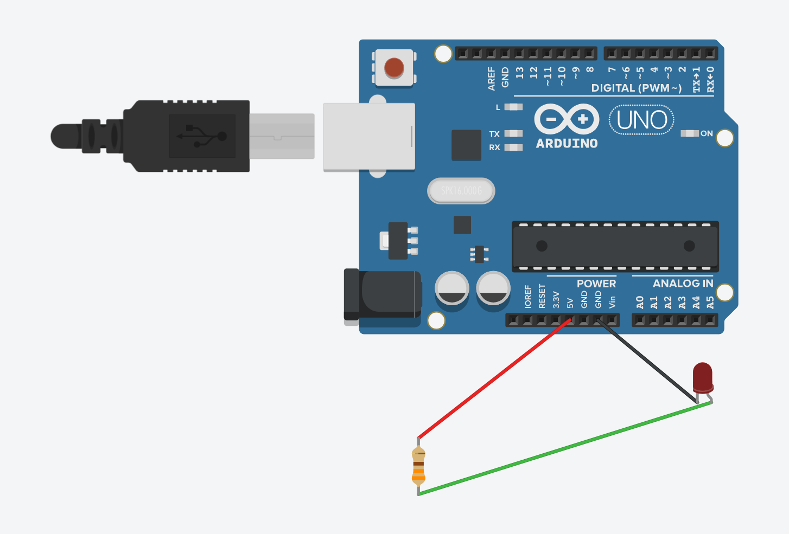
Turn it on!
- You can run your simulation using the start simulation button at the top.
- If you wired it correctly, your light will be on.
- If the light is not on
- check that the LED was not installed backwards
- check that resistor’s resistance (Ohms) is set correctly
- check that all wires are connected

Adding a breadboard
Unfortunately just having components floating around in space is not useful. For this reason we use a breadboard.
These series of holes are actually connected in two ways - rails along the sides, and two chunks of connected columns, as in the following diagram:

With this we can rebuild our circuit using the breadboard.
Note - it is usually a good idea to first connect both sides of the rails and grounds to power

Hint: You can make tidy wires by clicking to add a bend.
Add back in your resistor and led, with a few little jump wires and you are done. Run it to see that it still works:
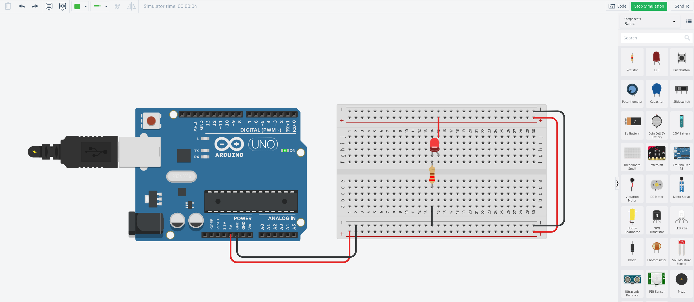
So far, our microcontroller is only acting like a power source - the same could be accomplished with a few batteries! Let’s modify our circuit so that we can actually control the state of the LED with the microcontroller
Note, you can pick up here by “Copy and Tinker” the phase-1-checkpoint circuit.
Remove the wire from the anode of the LED, and replace it with a wire going to Pin 1 of the microcontroller. Now, we can control the volate on this side through code. Open up the code editor of TinkerCad.
We will use the blocks system to start, similar to languages like Scratch.
Let’s start by simply making our light turn on:
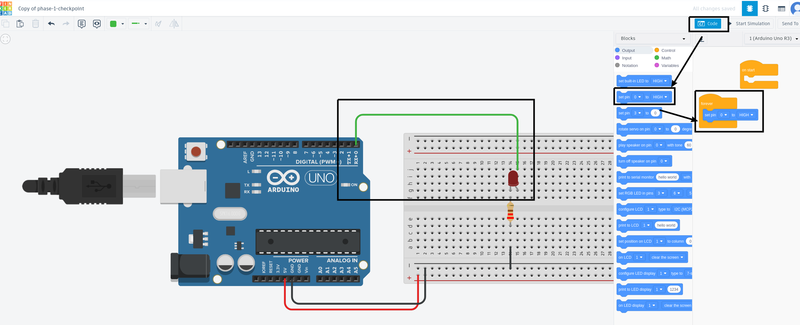
But we can do much more than this, we can also make our light blink, by modifying the code:
Hint: You can find the wait instruction under control

Next let’s modify the circuit so that we have a button, and when the button is pressed it controls the circuit:
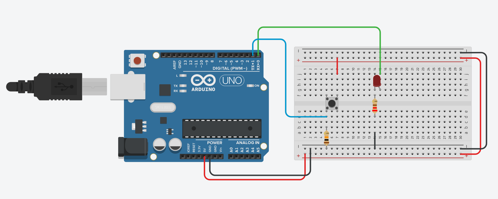
Hints:
- The new component is called a pushbutton
- It’s terminals are on the four corners, pay attention to which columns they are in!
- Set the switches resistor to 10K Ohm.
- Connect one side directly to the ground rail
Modify your code to the following:
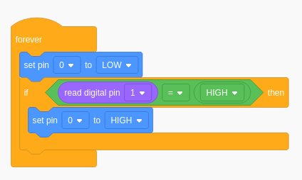
If everything is working correctly, at this point you can press the button, and when pressed the light will turn on.
You can join here by cloning the phase-2-checkpoint.
There’s also a more advanced LED called the RGB LED. This variant has three terminals, and if each of those terminals has sufficient current, they will produce RED, BlUE or GREEN light. If two terminals have sufficient current, e.g. RED and BLUE, it will produce MAGENTA light.
This is the final circuit we will build:
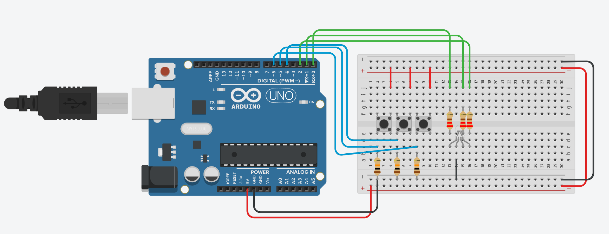
Let’s add some code to this as well:
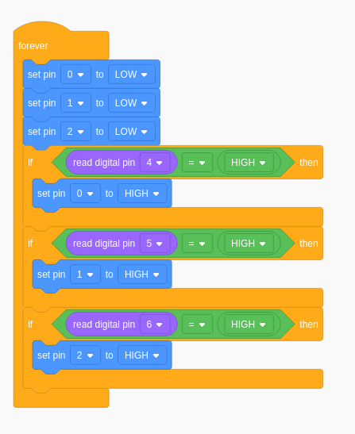
Try it out. Each of the buttons now controls a different light. Unfortuantely there is no way to press multiple buttons at once, so we can’t simulate different colors. Can you manually check them using Arduino code?
You can join here by cloning the phase-3-checkpoint.
For our final adventure, we will leave the world of Blocks code and head into text-based code.
You can swap here:
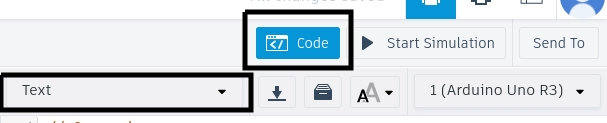
Welcome to the wonderful world of c++!
We are going to code a whack-a-mole game:
Use the following code:
// C++ code
//
int rando = 0;
int score = 0;
void setup()
{
pinMode(0, OUTPUT);
pinMode(1, OUTPUT);
pinMode(2, OUTPUT);
pinMode(4, INPUT);
pinMode(5, INPUT);
pinMode(6, INPUT);
}
void loop()
{
digitalWrite(0, LOW);
digitalWrite(1, LOW);
digitalWrite(2, LOW);
rando = random(1, 3 + 1);
delay(300);
if (rando == 1) {
digitalWrite(0, HIGH);
} else if (rando == 2) {
digitalWrite(1, HIGH);
} else if (rando == 3) {
digitalWrite(2, HIGH);
}
while(1){
delay(10); // Delay a little bit to improve simulation performance
if (rando == 1 && digitalRead(4) == HIGH) {
break;
}
if (rando == 2 && digitalRead(5) == HIGH) {
break;
}
if (rando == 3 && digitalRead(6) == HIGH) {
break;
}
}
score += 1;
delay(10); // Delay a little bit to improve simulation performance
}
Hint: It may be useful to add some notes to the circuit to help to remember which button does what:
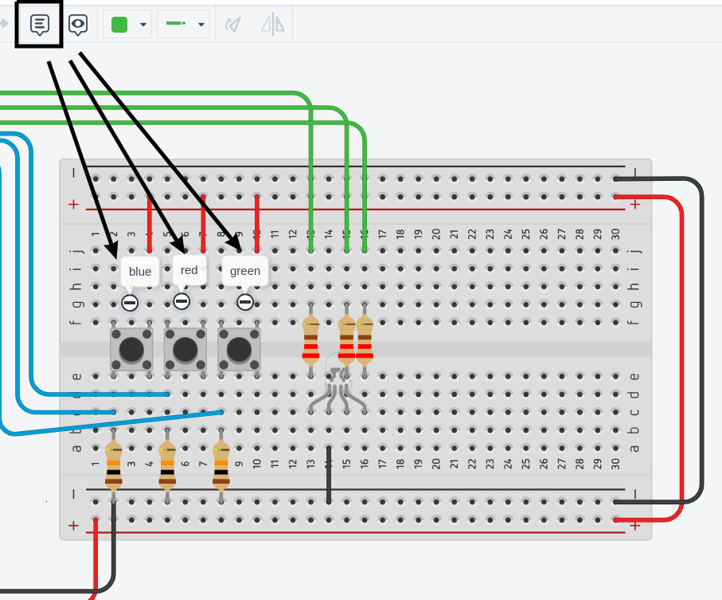
How to play:
When the game begins one of three lights will randomly come on. Press the light corresponding to the correct light to advance to the next stage.
However, our game does not really have a point.
I modified it a bit further in the final-game variant.
In this game:
- Press any button to start
- The lights will come on in a random order
- Press the corresponding buttons for that color
- After 10 rounds, the total reaction time will be shown in the serial monitor, in ms.
- That is, 1000th/s of seconds.
- e.g. 7230 is 7.23 seconds.
Note - I had to move a few pins around to access the serial port for showing scores.
Can you beat me? (Lower is better!)
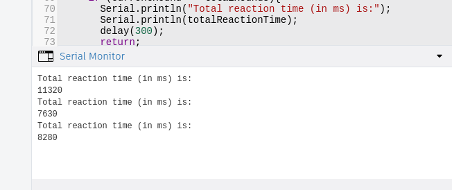
END